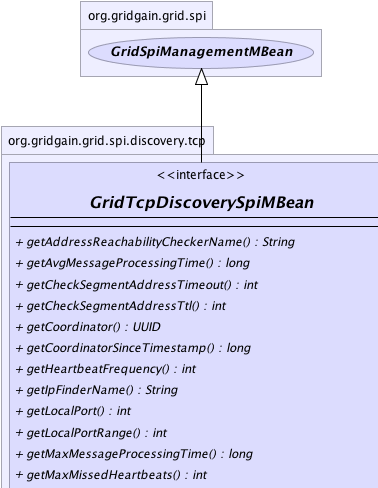
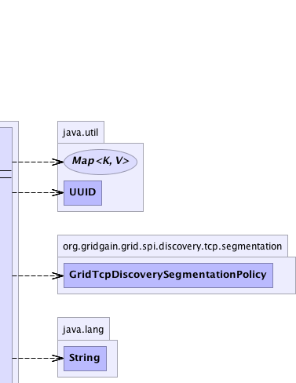
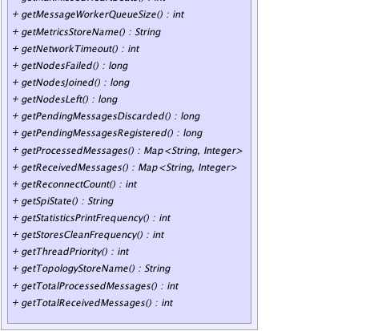

|
|

|
|

|

|

|
GridGain™ 3.1.1c
Community Edition |
|||||||||
| PREV CLASS NEXT CLASS | FRAMES NO FRAMES | |||||||||
| SUMMARY: NESTED | FIELD | CONSTR | METHOD | DETAIL: FIELD | CONSTR | METHOD | |||||||||
public interface GridTcpDiscoverySpiMBean
Management bean for GridTcpDiscoverySpi.
| Wiki | |
| Forum |
|  |  |
|  |
| Method Summary | |
|---|---|
String |
getAddressReachabilityCheckerName()
Gets GridTcpDiscoveryAddressReachabilityChecker (string representation). |
long |
getAvgMessageProcessingTime()
Gets avg message processing time. |
int |
getCheckSegmentAddressTimeout()
Gets timeout for each of segment check addresses reachability test. |
int |
getCheckSegmentAddressTtl()
Gets TTL for segment check addresses reachability test. |
UUID |
getCoordinator()
Gets current coordinator. |
long |
getCoordinatorSinceTimestamp()
Gets time local node has been coordinator since. |
int |
getHeartbeatFrequency()
Gets delay between heartbeat messages sent by coordinator. |
String |
getIpFinderName()
Gets GridTcpDiscoveryIpFinder (string representation). |
int |
getLocalPort()
Gets local TCP port SPI listens to. |
int |
getLocalPortRange()
Gets local TCP port range. |
long |
getMaxMessageProcessingTime()
Gets max message processing time. |
int |
getMaxMissedHeartbeats()
Gets max heartbeats count node can miss without initiating status check. |
int |
getMessageWorkerQueueSize()
Gets message worker queue current size. |
String |
getMetricsStoreName()
Gets GridTcpDiscoveryMetricsStore (string representation). |
int |
getNetworkTimeout()
Gets network timeout. |
long |
getNodesFailed()
Gets failed nodes count. |
long |
getNodesJoined()
Gets joined nodes count. |
long |
getNodesLeft()
Gets left nodes count. |
long |
getPendingMessagesDiscarded()
Gets pending messages discarded count. |
long |
getPendingMessagesRegistered()
Gets pending messages registered count. |
Map<String,Integer> |
getProcessedMessages()
Gets processed messages counts (grouped by type). |
Map<String,Integer> |
getReceivedMessages()
Gets received messages counts (grouped by type). |
int |
getReconnectCount()
Gets number of connection attempts. |
GridTcpDiscoverySegmentationPolicy |
getSegmentationPolicy()
Gets segmentation policy. |
String |
getSpiState()
Gets current SPI state. |
int |
getStatisticsPrintFrequency()
Gets statistics print frequency. |
int |
getStoresCleanFrequency()
Gets stores (IP finder and metrics store) clean frequency. |
int |
getThreadPriority()
Gets thread priority. |
String |
getTopologyStoreName()
Gets GridTcpDiscoveryTopologyStore (string representation). |
int |
getTotalProcessedMessages()
Gets total processed messages count. |
int |
getTotalReceivedMessages()
Gets total received messages count. |
boolean |
isAllAddressesReachabilityRequired()
Gets check all addresses flag. |
boolean |
isCheckSegmentEnabled()
Gets check segment flag. |
boolean |
isWaitForSegmentOnStart()
Gets wait for segment on start flag. |
| Methods inherited from interface org.gridgain.grid.spi.GridSpiManagementMBean |
|---|
getAuthor, getGridGainHome, getLocalNodeId, getName, getStartTimestamp, getStartTimestampFormatted, getUpTime, getUpTimeFormatted, getVendorEmail, getVendorUrl, getVersion |
| Method Detail |
|---|
@GridMBeanDescription(value="Heartbeat frequency.") int getHeartbeatFrequency()
@GridMBeanDescription(value="SPI state.") String getSpiState()
@GridMBeanDescription(value="IP Finder.") String getIpFinderName()
GridTcpDiscoveryIpFinder (string representation).
@GridMBeanDescription(value="Metrics store.") @Nullable String getMetricsStoreName()
GridTcpDiscoveryMetricsStore (string representation).
null if SPI
does not use metrics store.@GridMBeanDescription(value="Reconnect count.") int getReconnectCount()
@GridMBeanDescription(value="Network timeout.") int getNetworkTimeout()
@GridMBeanDescription(value="Local TCP port.") int getLocalPort()
@GridMBeanDescription(value="Local TCP port range.") int getLocalPortRange()
@GridMBeanDescription(value="Max missed heartbeats.") int getMaxMissedHeartbeats()
@GridMBeanDescription(value="Threads priority.") int getThreadPriority()
@GridMBeanDescription(value="Stores clean frequency.") int getStoresCleanFrequency()
@GridMBeanDescription(value="Statistics print frequency.") int getStatisticsPrintFrequency()
@GridMBeanDescription(value="Topology store.") @Nullable String getTopologyStoreName()
GridTcpDiscoveryTopologyStore (string representation).
null if SPI
does not use topology store.@GridMBeanDescription(value="Message worker queue current size.") int getMessageWorkerQueueSize()
@GridMBeanDescription(value="Nodes joined count.") long getNodesJoined()
@GridMBeanDescription(value="Nodes left count.") long getNodesLeft()
@GridMBeanDescription(value="Nodes failed count.") long getNodesFailed()
@GridMBeanDescription(value="Pending messages registered.") long getPendingMessagesRegistered()
@GridMBeanDescription(value="Pending messages discarded.") long getPendingMessagesDiscarded()
@GridMBeanDescription(value="Avg message processing time.") long getAvgMessageProcessingTime()
@GridMBeanDescription(value="Max message processing time.") long getMaxMessageProcessingTime()
@GridMBeanDescription(value="Total received messages count.") int getTotalReceivedMessages()
@GridMBeanDescription(value="Received messages by type.") Map<String,Integer> getReceivedMessages()
@GridMBeanDescription(value="Total processed messages count.") int getTotalProcessedMessages()
@GridMBeanDescription(value="Received messages by type.") Map<String,Integer> getProcessedMessages()
@GridMBeanDescription(value="Local node is coordinator since.") long getCoordinatorSinceTimestamp()
@GridMBeanDescription(value="Coordinator node ID.") @Nullable UUID getCoordinator()
@GridMBeanDescription(value="All addresses reachability required.") boolean isAllAddressesReachabilityRequired()
True if all addresses reachability is required by configuration.@GridMBeanDescription(value="Check segment enabled.") boolean isCheckSegmentEnabled()
false segment check will be omitted.
True if segment check is enabled.@GridMBeanDescription(value="Segment check addresses reachability test timeout.") int getCheckSegmentAddressTimeout()
Each address reachability is tested using this timeout.
@GridMBeanDescription(value="Wait for segment on start.") boolean isWaitForSegmentOnStart()
True if node should wait for segment on start.@GridMBeanDescription(value="Address reachability checker.") String getAddressReachabilityCheckerName()
GridTcpDiscoveryAddressReachabilityChecker (string representation).
@GridMBeanDescription(value="Segmentation policy.") GridTcpDiscoverySegmentationPolicy getSegmentationPolicy()
@GridMBeanDescription(value="TTL for segment check addresses reachability test.") int getCheckSegmentAddressTtl()
|
GridGain™ 3.1.1c
Community Edition |
|||||||||
| PREV CLASS NEXT CLASS | FRAMES NO FRAMES | |||||||||
| SUMMARY: NESTED | FIELD | CONSTR | METHOD | DETAIL: FIELD | CONSTR | METHOD | |||||||||
|
GridGain = High Performance Cloud Computing
|
|
|
|